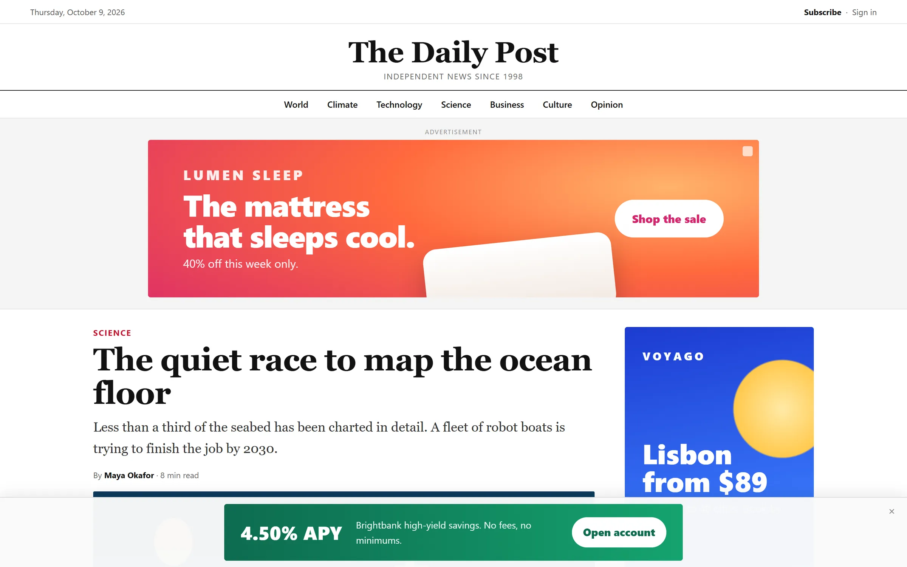
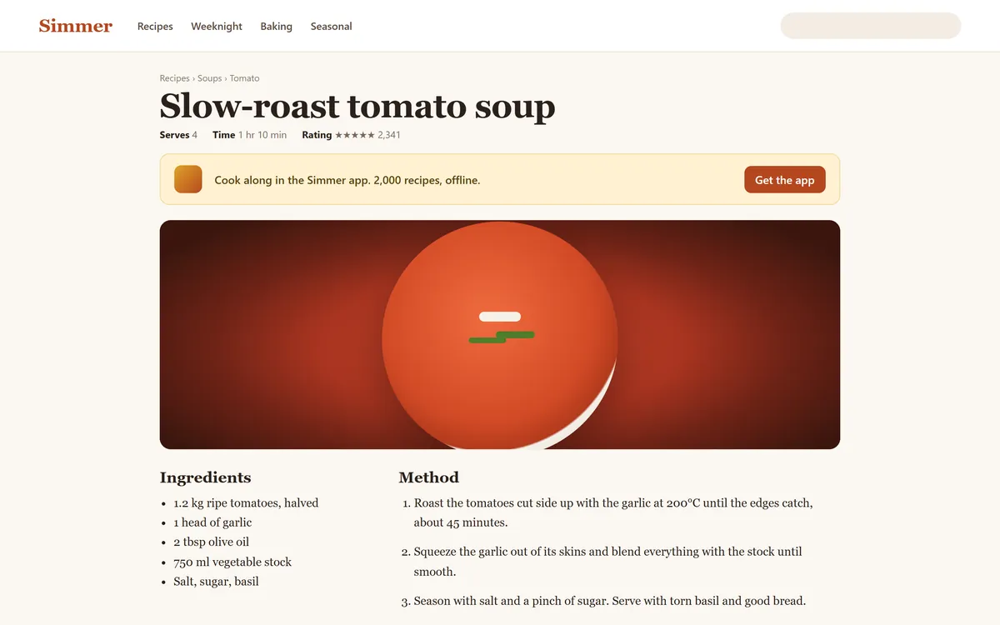
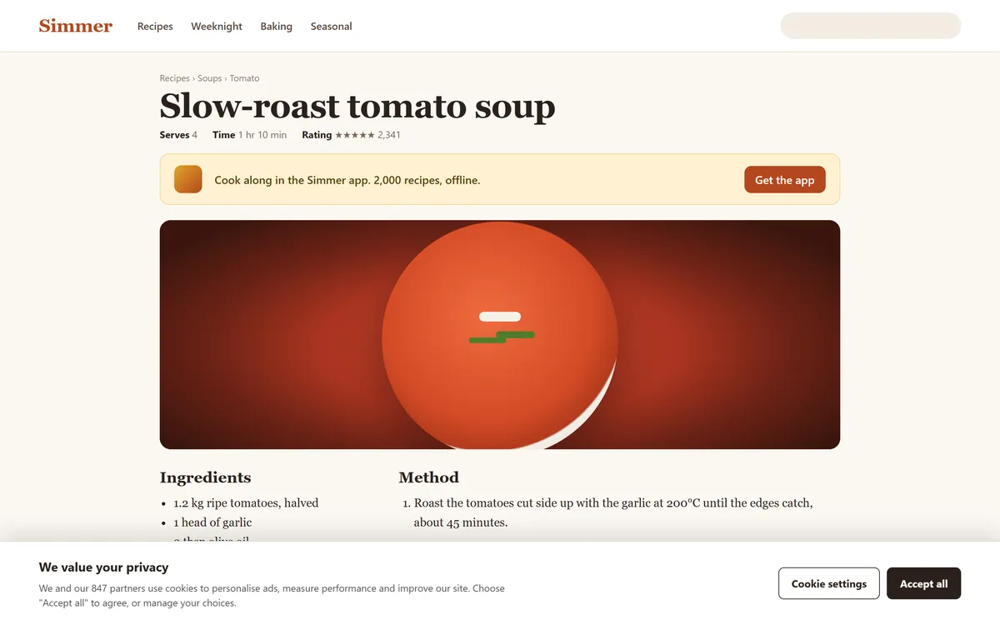

Tracker blocking
Trackers are blocked before they load.
Moat
A free ad blocker for Chrome that stops ads, trackers and hijacked pop-ups before they load.
Free. No account. Open source.
Meet Kai. Each cookie is something that follows you online. Kai keeps them out.Click a cookie.
Moat stops ads and trackers before they load, so pages arrive clean and quick. It answers cookie banners for you, closes pop-up tabs that hijack your clicks, and does it all inside your browser. No account. No telemetry.
About 310,000 filter rules run on every site. On this page, Moat stopped 4 ads and 3 trackers before any of them loaded.

Without MoatWith MoatDrag to compare. The Daily Post is a demo site; the blocking is real Moat.
Trackers are blocked before they load.
Open Moat on any page to see every ad and tracker it stopped, and which companies were behind them.
Moat answers them for you. It turns off every optional cookie the site allows, saves, and closes the banner.
Optional cookies turned off

Fake prize and fake virus tabs are closed as they open, before they can load.
If a site doesn't work right, pause Moat there with one switch. Every other site stays protected.
Each one stands for something Moat blocks.
Trackers
Follows you from site to site and records what you do. Moat blocks trackers before they load.
Ads
Covers the page you came to read. Moat blocks ads and closes the space they leave.
Hijacked pop-ups
Opens a new tab when you click on a page. Moat closes it before it loads.
Cookie banners
Asks you to accept every cookie on every site. Moat turns them down for you.
Most days you won't need to. When you do, it's one click away, and Kai walks you through it.
Now and then a site won't load right with ads blocked. You can turn Moat off for just that site.
Every other site stays protected. Turn the switch back on whenever you like.
A banner or box the filter lists don't catch? Point at it and it's gone, every time you visit.
Got too little or too much? Use Select more or Select less. You can bring anything back in Settings.
Many emails send their links through a tracker first. Moat stops the tracker and shows you where the link was going.
Open anyway loads the page once. A site on a scam or phishing list gets a stronger warning instead.
Balanced suits most people. Go Strict for more privacy, or Light if sites keep breaking.
Extras like blocking cross-site cookies sit just below. Each one has its own switch.
An ad got through, or a page broke? Send a report to Moat's developer in a few clicks.
You see exactly what gets sent before you send it. No account needed.
Moat has nothing to collect, so there's nothing to leak or sell. Blocking runs on your device, and the code is open for anyone to read.
Read the privacy policyInstall it and it works. No sign-up, no email, no login.
No analytics and no crash reports. Nothing reaches the developer unless you send a report.
Daily list fixes are checked against a key built into Moat before they're used.
GPL-3.0 on GitHub. Anyone can read it, build it and check it.
No paid tier, no premium unlock and no "acceptable" ads. Everything Moat does is in the free version, because there's only one version.
The lists come built in, with fixes every day.
310k
filter rules, on every site
Free on the Chrome Web Store. Set up in seconds.
Yes. Moat is free and open source under GPL-3.0. There's no paid tier, no premium unlock and no subscription.
Ads, trackers, hijacked pop-up tabs and cookie banners, out of the box. Device protection and leaked-password warnings are switches in Settings.
No. Blocking runs on your device, and there's no account and no analytics. Once a day it downloads small, signed files of filter fixes and security lists, and those requests carry nothing about you. Two optional switches go online when you turn them on: hidden-tracker detection asks Cloudflare where an address really points, and leaked-password warnings send a short scrambled piece of the password to Have I Been Pwned. The only time anything reaches Moat's developer is a problem report you write and send yourself, after seeing exactly what it contains.
It doesn't. Moat is an open-source project that runs very little online, so there's little to pay for. Nothing you do is sold, and it doesn't show "acceptable" ads.
Filter lists run inside the browser's own blocking engine, so ads and trackers are stopped before they load. Small signed updates arrive once a day. Read the technical details.
An ad blocker has to see a page's requests to block them, on every site you visit. Moat reads pages on your computer only and never sends their content anywhere.
Yes. Open the Moat popup on that site and flip the switch. Everywhere else stays protected. Kai shows you how.
Yes. Moat is built from one codebase for Chrome and Firefox. For now, Firefox users build it from source.
From the Chrome Web Store. It's free. You can also build it from source on GitHub.